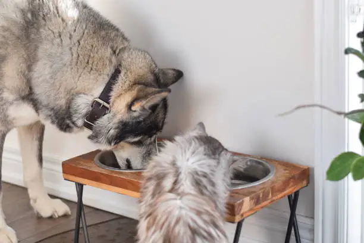

CONSEJOS PARA EL CUIDADO DE TU MASCOTA
La hidratación es indispensable La relación promedio de agua que necesitan es de 60ml por kilo de peso corporal. Esta cantidad deberá aumentar en el caso de tratarse de un cachorro, una hembra lactante, un clima muy cálido o si ha realizado actividad física. No olvides cambiarle el agua regularmente, ya que de lo contrario es probable que se alojen bacterias perjudiciales para su salud.
Respeta sus transiciones alimentarias si cambias un alimento por otro, es recomendable que lo hagas progresivamente. Dosifica ambos productos durante una semana y ve aumentando la dosis del nuevo alimento hasta cambiarlo por completo. Así su metabolismo podrá acostumbrarse y se reducirá el rechazo o los problemas digestivos.
Controla las cantidades ayudarás a prevenir enfermedades como la obesidad, que provoca muchas otras complicaciones de salud. Para saber cómo alimentar a tu perro correctamente intenta seguir las instrucciones de los fabricantes para adaptar las cantidades a las necesidades de tu peludo.
Cuida la higiene de los alimentos los productos comerciales como el pienso no tienen problemas para mantener la higiene, siempre y cuando estén correctamente cerrados y en lugares secos y protegidos de la luz. En el caso de ser enlatados, frescos o descongelados se pueden conservar en frío durante un período corto de tiempo. En el caso de que sobre comida, ya sea seca o húmeda, retira los restos y limpia su plato a diario. De esta forma evitarás las bacterias y mantendrás los alimentos de tu peludo en buenas condiciones.